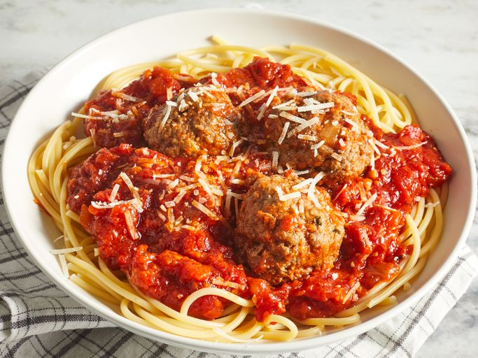

Back
Italian Spaghetti Sauce with Meatballs

Ingredients
Meatballs
- 1 pound lean ground beef
- 1 cup fresh bread crumbs
- 1 tablespoon dried parsley
- 1 tablespoon grated Parmesan cheese
- ¼ teaspoon ground black pepper
- ⅛ teaspoon garlic powder
- 1 egg, beaten
Sauce
- ¾ cup chopped onion
- 5 cloves garlic, minced
- ¼ cup olive oil
- 2 (28 ounce) cans whole peeled tomatoes
- 2 teaspoons salt
- 1 teaspoon white sugar
- 1 bay leaf
- 1 (6 ounce) can tomato paste
- ¾ teaspoon dried basil
- ½ teaspoon ground black pepper
Directions
- Gather all ingredients.
-
Combine ground beef, bread crumbs, parsley, Parmesan, 1/4 teaspoon black pepper, garlic powder and beaten egg in a large bowl. Mix well and form into 12 balls. Store, covered, in refrigerator until needed.
Overhead of formed meatballs in a baking sheet with the meat mixture in a bowl off to the side.
-
In a large saucepan over medium heat, sauté onion and garlic in olive oil until onion is soft and translucent, being careful not to brown, about 5 minutes.
Chopped onions being sautéed in a saucepan with a wooden spoon.
-
Stir in tomatoes, salt, sugar and bay leaf. Cover, reduce heat to low, and simmer for 90 minutes.
Overhead of tomatoes, sugar, and a bay leaf being mixed and cooked into onions on a skillet.
-
Stir in tomato paste, basil, and 1/2 teaspoon black pepper. Add meatballs, cover, and simmer 30 minutes more.
Overhead of meatballs being cooked and mixed in to a pasta sauce.
- Serve hot and enjoy!
Nutrition Facts
(per serving)
- 347 Calories
- 21g Fat
- 23g Carbs
- 19g Protein